Notes on Molecular Simulation
CCP5 Summer School
Marcus N. Bannerman
m.campbellbannerman@abdn.ac.uk
Access the slides here:
www.marcusbannerman.co.uk/CCP5School
2021 Lectures
- Python pre-school notes (hosted on Google collab)
- Statistical mechanics 1
- Statistical mechanics 2
- Monte carlo 1
- Monte carlo 2
- Monte carlo 3
Old out of date notes I haven't thrown away yet from previous summer schools
Statistical mechanics: Part 1
Ludwig Boltzmann, who spent much of his life studying statistical mechanics, died in 1906, by his own hand. Paul Ehrenfest, carrying on the work, died similarly in 1933. Now it is our turn to study statistical mechanics. Perhaps it will be wise to approach the subject cautiously.
(Opening lines of "States of Matter", by D.L. Goodstein).
Other excellent stat-mech texts include:
- “Statistical mechanics for computer simulators,” Daan Frenkel (free/online/40 pages)
- “Physical chemistry,” P. W. Atkins.
- “Molecular driving forces,” K. A. Dill and S. Bromberg
- “Statistical mechanics: A survival guide,” M. Glazer and J. Wark
- “Statistical mechanics,” D. A. McQuarrie
- “Statistical mechanics, principles and selected applications” T. L. Hill
- “Introduction to modern statistical mechanics” David Chandler
- “Statistical mechanics: Theory and molecular simulation” Mark Tuckerman
- “Computer simulation of liquids” M. P. Allen and D. J. Tildesley
Statistical mechanics is our bridge from the microscopic scale (simulating individual atoms/molecules) to the “macroscopic” measurements we make in experiments (i.e., internal energy, heat capacity, pressure, free-energy).
We use it to connect to thermodynamics, and that is the focus here (statistical thermodynamics/equilibrium statistical mechanics), but it also is used to explore dynamics.
Two hours/lectures is nothing, I will hopelessly fail to teach you it all, so I'll give you the key touch points, and try my best to be different/interesting/intuitive.
If I get it wrong, I hope I do it badly enough to inspire you to correct me!
Lets try to be real (and stay sane). The simplest example I can think that fits statistical mechanics AND thermodynamics is the game of craps (the sum of two dice).
We'll study this, and try to draw parallels to molecular systems. If the link isn't clear, let me know!
A craps example
In craps, players roll two dice and place bets on the outcome.
The numbers on the dice at any point in the game/simulation are the microstate variables.
State variables are observables which must change IFF1 the system changes.
1: IFF = IF and only if.
The microstate of molecular systems are the atomic coordinates and velocities.
Players/observers of craps do not care about the microstate. The only state that is observed in craps is the sum of the dice.
The sum of the dice is thus called the macrostate. A particular macrostate can consist of an ensemble of many microstates.
For example, the state of a sum of 7 on the two dice is made of the $\left\{\left[1,\,6\right],\,\left[2,\,5\right],\,\left[3,\,4\right],\ldots\right\}$ microstates.
This is like a molecular system, where an observer sees a particular state (i.e. pressure, temperature, and mass) will have many possible microstates (molecular configurations), and they don't particularly care about the microstate.
Note: When we say state we typically mean the macrostate as its the one we can see experimentally/IRL, thus it's the one we interact with and actually care about.
Fundamental postulate: Each microstate is equally probable.
This is intuitive for perfect dice, each possible roll is equally probable. Not intuitive at all for molecular systems; however, it works, and that is all we have time for.
Even though the microstates are equally probable, the macrostates have different probabilities due to the combinations of microstates that make up their ensemble.
For two dice, rolling a seven
$\left\{\left[1,\,6\right],\,\left[2,\,5\right],\,\left[3,\,4\right],\,\left[4,\,3\right],\,\left[5,\,2\right],\,\left[6,\,1\right]\right\}$.
is six times more likely than a snake eyes (two)
$\left\{\left[1,\,1\right]\right\}$
What happens as we add more dice? Molecular systems have very large numbers of microstate variables $\left(\mathcal{O}\left(10^{26}\right)\right)$, so we need an intuition of what happens when we have many dice....
Example: Hyper-craps
{kind=link}
Key points from hyper-craps
- Combinations increase incredibly quickly, even for small systems (20 dice, 189T combinations to roll 70).
- The distribution sharpens as the number of variables increases. Thus “large” systems will have a very small collection of high probability states, which we will call the equilibrium state.
- Everything is possible, but highly highly improbable compared to the equilibrium state.
-
Normalisation is a convenience to:
- Make properties intensive (average dice value) instead of extensive (dice sum).
- Move from combinations to probability, which is more useful for calculations.
- The number of combinations/microstates, $\Omega(\sum_i x_i)$, for a particular dice roll/macrostate $\sum_i x_i$, is an unnormalised probability.
Thermodynamics of craps
Lets say we start with a roll of hyper-snake-eyes (all ones). Its density-of-states/combinations is $\Omega=1$. What happens if we start to reroll dice randomly one at a time?
The system moves from this state to states with higher $\Omega$, simply because they are more probable.
Generally ${\rm d}\Omega \ge 0$..... just like entropy!
However, entropy is additive, i.e. $2\times$ the system size gives $2\times$ the entropy.
If we want combinations to gain this property of entropy we need to take its logarithm; i.e., \begin{align} \Omega_2 &= \Omega_1\times\Omega_1\\ \ln\Omega_2 &= \ln\Omega_1 + \ln\Omega_1 \end{align}
{kind=link}
Recap: The first law
Thermodynamics is observational. Consider the first law:
ENERGY IS CONSERVED
But what is energy? Every time we observe violations of this law, we redefine energy to include the other forms.
Let's rephrase the law to be something more universal (!):
THERE IS SOMETHING1 WHICH IS CONSERVED AND WE CALL IT ENERGY
1: We need to be careful as it must also be a state variable thus observed to change with the state of the system, not just some arbitrary constant. What exactly is a state variable, and why, in real systems, keeps me up at night...
Recap: The second law
Prepare yourself for another brutal simplification followed by wild statements.
ENTROPY MUST INCREASE1
Entropy is like time in its inexorable increase, except it is not monotonic. It's more “real” than time(!), as a constant entropy pocket universe would have no way to record the passage of time.2
1: Entropy does not stay the same in any real macroscopic process; however, $S=0$ is mathematically possible.
2: The lack of an "arrow of time" was a major critiscm of Boltzmann's early work on statistical mechanics. The conclusions of a statistical mechanical universe and time are fascinating. E.g. See The Infinite Monkey Cage: Does Time Exist?" .
Monte Carlo: Part 1
God does not play dice. A. Einstein
God does play dice with the universe. All the evidence points to him being an inveterate gambler, who throws the dice on every possible occasion. S. Hawking
You are the omnipotent being of your simulation, so you get to choose: \begin{align*} \langle{\mathcal A}\rangle &= \int d{\boldsymbol\Gamma}\,{\mathcal P}({\boldsymbol\Gamma})\, {\mathcal A}({\boldsymbol\Gamma}) & \text{(Monte Carlo)}\\ &\text{or}\\ \langle{\mathcal A}\rangle&=\lim_{t_{obs.}\to\infty} \frac{1}{t_{obs.}}\int_0^{t_{obs.}}\mathcal A(t)\,{\rm d}t & \text{(Molecular Dynamics)} \end{align*}
Imagine simulating roulette to evaluate betting strategies on your balance $\mathcal{A}$. You could evaluate them over time $t$ by simulating the motion of the ball as it visits the different numbers/states of the wheel, \begin{align*} \langle{\mathcal A}\rangle&=\lim_{t_{obs.}\to\infty} \frac{1}{t_{obs.}}\int_0^{t_{obs.}}\mathcal A(t)\,{\rm d}t & \text{(MD)}. \end{align*}
Or you can directly sample the numbers/states ${\boldsymbol\Gamma}$ as you know their probability distribution beforehand, \begin{align*} \langle{\mathcal A}\rangle &= \int d{\boldsymbol\Gamma}\,{\mathcal P}({\boldsymbol\Gamma})\, {\mathcal A}({\boldsymbol\Gamma}) & \text{(MC)}. \end{align*}
The system must be ergodic and you must know the (relative) probability of the states for these averages to be equal. Suprisingly, this is often the case for molecular systems (see stat. mech. lectures).
Monte Carlo
Molecular dynamics has a very large number of states, we cannot visit them all.
Stanisław Marcin Ulam (re)invented the Monte Carlo method while working on the nuclear weapons project in 1946. The code name came from the Monte Carlo Casino where Ulam's uncle gambled, and the idea came from considering the large number of states in Canfield solitaire.
The ergodic idea is that we can visit "enough" to get a good approximation of the observables $\mathcal{A}$. My lectures will cover the basics of Monte Carlo integration, and its application to molecular systems.
Introduction
- Monte Carlo (MC) is a stochastic molecular-simulation technique.
- Sampling can be biased towards regions of specific interest (see MC 3).
- Not constrained by natural timescales (as in molecular dynamics) but time does not generally exist in MC simulation.
- No (physical) dynamic foundation for the systems considered here.
- Can easily handle fluctuating numbers of particles (as in the grand canonical ensemble) hard for molecular dynamics, but actually the closest ensemble to real experiments.
Overview
- Introduction
- Practicalities
- Free energy barriers
- Advanced algorithms
- Further reading:
- MP Allen and DJ Tildesley, Computer Simulation of Liquids (1987).
- D Frenkel and B Smit, Understanding Molecular Simulation (2001).
- DP Landau and K Binder, A Guide to Monte Carlo Simulations in Statistical Physics (2000).
- Implicit uniform probability/sampling distribution ${\mathcal P}(x)$ along the interval $[a,b]$: \begin{equation*} {\mathcal P}(x) = \left\{ \begin{array}{ll} \left(b-a\right)^{-1} & \mbox{for $a \le x \le b$} \\ 0 & \mbox{for $x\lt a$ or $x\gt a$} \\ \end{array} \right. \end{equation*}
- If we randomly sample points $x_1$, $x_2$, $\cdots$ from ${\mathcal P}(x)$. The integral is related to the average of the function $f$: \begin{equation*} I = (b-a) \int_a^b {\mathcal P}(x)\,f(x) {\rm d}x = (b-a) \langle f(x) \rangle \end{equation*}
- The average can be approximated by: \begin{equation*} I \approx \frac{(b-a)}{N} \sum_{k=1}^N f(x_k) \end{equation*}
- Ulam's initial application was to calculate the chance of winning Canfield solitaire, where the tediousness of combinatorial calculations could be replaced by simply playing a large number of games.
Convergence
Monte Carlo is an extremely bad method; it should be used only when all alternative methods are worse.
A. D. Sokal
Example: Convergence
Calculating $\pi=\int^1_{-1}\int^1_{-1} \theta(1-x^2-y^2){\rm d}x\,{\rm d}y$ by randomly dropping points in a square and testing if they fall in the circle (fraction should be $\pi/4$).
Example: Convergence
Rerunning the simulation yields different scatter, but similar rate of convergence.
The average of $N$ normally distributed random numbers, centered about $1$, with standard deviation of $\sigma_f$ also gives the same sort of convergence!
Distribution of results as a function of $N$, the
number of random points used for the simple integral
of $sin(x)$.
Note the convergence and evolution of a peaked
distribution…
Central limit theorem
Consider a set of $N$ independent variables $x_1$, $x_2$,...,$x_N$ which all follow the same probability distribution function $p(x)$, with mean, $\mu$, and variance, $\sigma$.
How is the mean $\bar{x}=\frac{1}{N}\sum_{k=1}^N x_k$ of these variables distributed?
This is given by the central limit theorem, which becomes increasingly accurate as $N\to\infty$ \begin{align*} p_{\bar{x}}(\bar{x}) &\approx (2\pi\sigma_{\bar{x}}^2)^{-1/2} \exp\left(-\frac{(\bar{x}-\mu)^2}{2\sigma_{\bar{x}}^2}\right) \\ \sigma_{\bar{x}} &\approx \frac{\sigma}{\sqrt{N}} \end{align*}
All our results follow this so far, and it applies to most processes, physics has never been so easy…
The uniform distribution (black), averaged over multiple ($N$) samples, tends towards a peaked gaussian distribution.
This is also true for the exponential distribution (black), and many others.
Convergence
How quickly does the average of central-limit
processes (like Monte Carlo) converge to the correct answer?
Central limit theorem:
\begin{align*}
\sigma_{\left\langle f\right\rangle} &= \frac{\sigma_f}{\sqrt{N}}
&
\sigma_{f} &= \left\langle \left(f(x)\right)^2\right\rangle - \left\langle f(x)\right\rangle^2
\end{align*}
This "slow" $N^{-1/2}$ convergence is unavoidable! But we can reduce $\sigma_f$ by a factor of $10^6$ or more using importance sampling (more in a moment).
However, the dependence of the convergence with sample size is independent of the dimensionality of the integral, so convergence is independent of dimensionality (molecular systems typically have at least $d\,N$ dimensions!).
Multidimensional integrals
The position and velocity of every atom/molecule form a $3N$-dimensional phase space, so we need multidimensional MC. \begin{equation*} I = \int_{V} f({\bf x}) {\rm d}{\bf x} \end{equation*}
- Uniform, probability distribution ${\mathcal P}({\bf x})$ within the region $V$:
- Randomly sample points ${\bf x}_1$, ${\bf x}_2$, $\cdots$ from ${\mathcal P}({\bf x})$.
- The integral is related to the average of the function $f$: \begin{equation*} I = V \int_{V} {\mathcal P}({\bf x})\,f({\bf x})\,{\rm d}{\bf x} = V \langle f({\bf x}) \rangle \end{equation*}
- The average can be approximated by: \begin{equation*} I \approx \frac{V}{N} \sum_{k=1}^N f({\bf x}_k) \end{equation*}
- Choose distribution ${\mathcal P}$ to make $f({\bf x})/{\mathcal P}({\bf x})$ as constant as possible: \begin{equation*} I = \int_{V} {\mathcal P}({\bf x}) \, \frac{f({\bf x})}{{\mathcal P}({\bf x})}{\rm d}{\bf x} \end{equation*}
- Sample using $x$ from now non-uniform distribution ${\mathcal P}(x)$ \begin{equation*} I \approx \frac{V}{N} \sum_k \frac{f({\bf x})}{{\mathcal P}({\bf x})} \end{equation*}
- The variance can be significantly reduced if the sharp peaks can be flattened.
Factor of $2/3$ in $\mathcal{P}$ is to normalise the distribution over $[0,1]$.
Curves represent the distribution of results for the previous integral when MC using uniform (unfilled) and importance (filled) sampling.
Sampling from an arbitrary distribution
- We need to sample molecular coordinates according to probability distributions from statistical mechanics.
- Importance sampling also requires the generation of numbers from an arbitrary probability distribution.
- One dimensional distributions can be sampled by sampling uniformly from the cumulative distribution function.
- In higher dimensions, sampling algorithms are only available for certain distributions (e.g., Gaussian distributions).
- The Metropolis method allows the sampling of arbitrary, multidimensional distributions. This relies on constructing a Markov process.
Markov process
A Markov process is a stochastic process where the future state of the system depends only on the present state of the system and not on its previous history.- ${\mathcal P}_\alpha^{(n)}$ probability that the state $\alpha$ is occupied at step $n$.
- Transition probability $W_{\alpha'\leftarrow\alpha}$
Probability that a system in state $\alpha'$ will transition to state $\alpha$. - Markov chain: \begin{equation*} {\mathcal P}_\alpha^{(n+1)} = \sum_{\alpha'} W_{\alpha\leftarrow\alpha'} {\mathcal P}_{\alpha'}^{(n)} \end{equation*}
- What guarantees a stationary, limiting distribution ${\mathcal P}_\alpha$ even exists?
Transition probabilities
- $W_{\alpha'\leftarrow \alpha}$ is the probability that the system will transition to state $\alpha'$, given that it is in state $\alpha$.
- The transition matrix must satisfy: \begin{equation*} \sum_{\alpha'} W_{\alpha'\leftarrow \alpha} = 1 \end{equation*}
- The choice of the transition matrix determines the properties of the Markov process.
Stationary distribution
We need to choose the transition matrix to ensure that the stationary distribution
- exists and is unique \begin{equation*} {\mathcal P}_\alpha = \sum_{\alpha'} W_{\alpha\leftarrow\alpha'} {\mathcal P}_{\alpha'} \end{equation*}
- is rapidly approached \begin{align*} \lim_{n\to\infty} {\mathcal P}_\alpha^{(n)} &= {\mathcal P}_\alpha \\ {\mathcal P}_\alpha^{(n)} &= \sum_{\alpha_1,\alpha_2,\dots,\alpha_n} W_{\alpha\leftarrow\alpha_1}W_{\alpha_1\leftarrow\alpha_2}\cdots W_{\alpha_{n-1}\leftarrow\alpha_n}{\mathcal P}_{\alpha_n}^{(0)} \\ &= \sum_{\alpha'} W_{\alpha\leftarrow\alpha'}^n{\mathcal P}_{\alpha'}^{(0)} \end{align*}
Detailed balance
- If the transition probability satisfies the detailed balance condition, the Markov process has a unique, stationary limiting distribution.
- Physically, the condition of detailed balance requires that the probability of observing the system transition from state a $\alpha$ to another state $\alpha'$ is the same as observing it transition from $\alpha'$ to $\alpha$.
- Mathematically, this is \begin{equation*} W_{\alpha\leftarrow \alpha'} {\mathcal P}_{\alpha'} = W_{\alpha'\leftarrow \alpha} {\mathcal P}_\alpha \end{equation*}
- Detailed balance is not required for the Markov process to possess a unique, stationary limiting distribution, but its a nice way to make sure.
Metropolis method
- The Metropolis method provides a manner to sample from any probability distribution ${\mathcal P}_\alpha$, using a Markov process.
- The transition probabilities are divided into two contributions: \begin{equation*} W_{\alpha'\leftarrow \alpha} = A_{\alpha'\leftarrow \alpha} g_{\alpha'\leftarrow \alpha} \end{equation*} where $g_{\alpha'\leftarrow \alpha}$ is the probability of selecting a move to state $\alpha'$, given the system is at state $\alpha$, and $A_{\alpha'\leftarrow \alpha}$ is the probability of accepting the proposed move.
- The acceptance probability is given by \begin{equation*} A_{\alpha'\leftarrow\alpha} = \left\{ \begin{array}{ll} 1 & \mbox{if ${\mathcal P}_{\alpha'}\gt {\mathcal P}_\alpha$} \\ \frac{{\mathcal P}_{\alpha'}}{{\mathcal P}_\alpha} & \mbox{if ${\mathcal P}_{\alpha'}\lt {\mathcal P}_\alpha$} \end{array} \right. \end{equation*}
- If $g_{\alpha'\leftarrow \alpha}=g_{\alpha\leftarrow \alpha'}$, then the process satisfies detailed balance.
Metropolis method
Markov process: Continuous state space
- The generalisation to continuous systems is straightforward.
- ${\mathcal P}^{(n)}(x)$ probability that the state $x$ is occupied at step $n$.
- Transition probability $W(x'\leftarrow x)$
Probability that a system in state $x$ will transition to state $x'$. - Markov chain \begin{equation*} {\mathcal P}^{(n+1)}(x) = \int W(x\leftarrow x')\,{\mathcal P}^{(n)}(x')\,{\rm d}{\bf x}' \end{equation*}
Random number generators
Any one who considers arithmetical methods of producing random digits is, of course, in a state of sin.J. von Neumannvon Neumann is simply trying to caution you against believing that random number generators (RNG) are actually random.
But GPU graphics programmers really do use a state of $\sin$! \begin{align*} x_i = {\rm fract}(43758.5453\sin(12.9898\,i)) \end{align*}
When performing Monte Carlo, you must make sure your randomness is sufficiently random.
Pseudo-random number generators
- Typically, random deviates are available with a uniform distribution on $[0,1)$ in most programming languages.
- Be suspicious of intrinsic "ran" functions
- Linear congruential generators are often used for these and use the recursion \begin{equation*} X_{j+1} = a X_j + b \qquad \mod m \end{equation*}
- Written ${\rm LCG}(m,a,b,X_0)$
- Generates integers in range $0 \le X \le m$
- Extremely fast but sequence repeats with period $m$ AT BEST
- 32-bit: $m \sim 2^{31} \sim 10^9$, whereas 64-bit: $m \sim 10^{18}$
Tests for random number generators
- RNGs assessed by plotting $d$-dimensional vectors $(X_{n+1},\dots,X_{n+d})$ and looking for “planes” (which are bad)
- 3d plots: good (left); bad $LCG(2^{31},65539,0,1)$ (right) 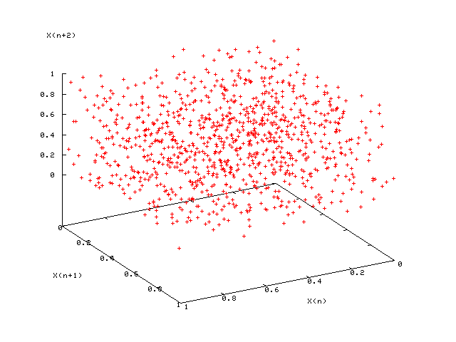 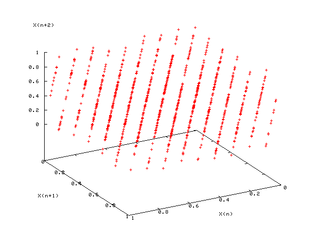
- In addition, simulate a finite-size system for which the properties are known exactly (e.g., 2D Ising model on square lattice)
- The gold-standard battery of tests are the Diehard tests.
Mersenne Twister
- Based on Mersenne prime $2^{19937}-1$.
- Passes many tests for statistical randomness.
- Default random number generator for Python, MATLAB, Ruby, etc. Available in standard C++. Code is also freely available in many other languages (e.g., C, FORTRAN 77, FORTRAN 90, etc.).
Monte Carlo 2
Using lists of "truly random" random numbers [provided by experiment via punch cards] was extremely slow, but von Neumann developed a way to calculate pseudorandom numbers using the middle-square method. Though this method has been criticized as crude, von Neumann was aware of this: he justified it as being faster than any other method at his disposal, and also noted that when it went awry it did so obviously, unlike methods that could be subtly incorrect.Taken from the MC wikipedia page
Subtle errors are easy to make. We must not violate detailed balance (or do so very very carefully), and must have good tests to ensure the correct ensemble is simulated.
Overview
- Monte Carlo in the NVT ensemble
- Practicalities
- Ergodicity and free-energy barriers
- Measuring ensemble averages
- Monte Carlo in the isobaric-isothermal ensemble
- Monte Carlo in the grand canonical ensemble
- Example: Truncated, shifted Lennard-Jones fluid
- Finite-size effects
Canonical ensemble
- Constant particle number, volume, and temperature; fluctuating energy.
- Distribution of energies: \begin{equation*} {\mathcal P}(E;N,V,\beta) \propto \Omega(N,V,E)\,e^{ - \beta E} \end{equation*}
- Distribution of individual states: \begin{equation*} {\mathcal P}({\boldsymbol\Gamma};N,V,\beta) \propto e^{ - \beta H({\boldsymbol\Gamma})} \end{equation*}
- Partition function: \begin{align*} Q(N,V,\beta) = \int {\rm d}E\,\Omega(N,V,E)\,e^{- \beta E} = \int {\rm d}{\boldsymbol\Gamma}\,e^{- \beta H({\boldsymbol\Gamma})} \end{align*}
- Helmholtz free energy \begin{equation*} F(N,V,T) = -k_B\,T\ln Q(N,V,\beta) \end{equation*}
Metropolis Monte Carlo in the NVT ensemble
Boltzmann distribution:
$
{\mathcal P}({\boldsymbol\Gamma}) \propto e^{-\beta\,H({\boldsymbol\Gamma})}
$
Monte Carlo integration
\begin{align*}
\langle {\mathcal A} \rangle
&= \int d{\boldsymbol\Gamma}\, {\mathcal P}({\boldsymbol\Gamma}) {\mathcal A}({\boldsymbol\Gamma})
\approx \frac{1}{{\mathcal N}}
\sum_{k=1}^{\mathcal N} {\mathcal A}({\boldsymbol\Gamma}_k)
\end{align*}
(provided ${\boldsymbol\Gamma}_k$ is generated from ${\mathcal P}({\boldsymbol\Gamma})$)
Transition probability: \begin{equation*} W({\boldsymbol\Gamma}_n\leftarrow{\boldsymbol\Gamma}_o) = g({\boldsymbol\Gamma}_n\leftarrow{\boldsymbol\Gamma}_o) A({\boldsymbol\Gamma}_n\leftarrow{\boldsymbol\Gamma}_o) \end{equation*} where \begin{align*} g({\boldsymbol\Gamma}_n\leftarrow{\boldsymbol\Gamma}_o) &= \mbox{random particle move} \\ A ({\boldsymbol\Gamma}_n\leftarrow{\boldsymbol\Gamma}_o) &= \left\{ \begin{array}{ll} 1 & \mbox{if $H({\boldsymbol\Gamma}_n) \lt H({\boldsymbol\Gamma}_o)$} \\ e^{-\beta(H({\boldsymbol\Gamma}')-H({\boldsymbol\Gamma}))} & \mbox{if $H({\boldsymbol\Gamma}_n) \gt H({\boldsymbol\Gamma}_o)$} \end{array} \right. \end{align*}
Particle move
- Pick particle at random (to obey detailed balance)
-
Alter $x$, $y$, and $z$ coordinates by displacements randomly
from the interval $-\Delta{\bf r}_{\rm max}\lt \Delta{\bf r}\lt \Delta{\bf
r}_{\rm max}$
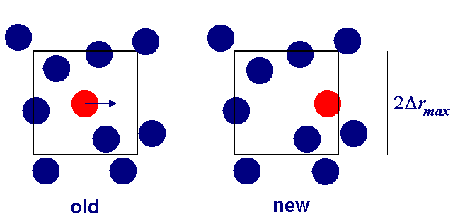 - Calculate resulting change in potential energy $\Delta U$
- Accept move with probability ${\rm min}(1,e^{-\beta\Delta U})$
- If $\Delta U\lt 0$, accept.
- If $\Delta U\gt 0$, generate random number $R \in[0,1)$
- If $R\le e^{-\beta\Delta U}$, accept.
- If $R\gt e^{-\beta\Delta U}$, reject and retain old configuration.
Particle move regions
We must be careful to ensure detailed balance, when moving a particle it must be able to return to its initial starting point, so spheres and cubes are fine, but not triangular test regions!
Tuning the acceptance rate
- Acceptance rate controlled by maximum displacement(s).
- Displacements result in energy change $\Delta U$.
- Large displacements are unlikely to be accepted.
- Small displacements are more likely to be accepted, but progress through configuration space is slow.
- Although moves are accepted, this is not be a sensible limit to work in.
- Trial displacements should be adjusted to give maximum actual displacement per unit CPU time.
In this simulation, the intermediate maximum trial move distance results in the fastest decay (i.e., the fastest sampling of phase space) per move.
Equilibration
- MC simulations converge towards equilibrium (or “thermalize”) until $p(A,\tau+1) = p(A,\tau)$
- Starting from a non-equilibrium configuration, the deviation from equilibrium decreases like $\exp(-\tau/\tau_0)$, where $\tau_0$ is the correlation “time”
- Must only retain measurements (for ensemble averages etc.) when $\tau\gg\tau_0$, so that the initial (typically unphysical) condition is lost.
- See the exercises and the Molecular Dynamics simulation lectures for more information.
Diagnostics
- Useful diagnostics include binning, autocorrelations, hot and cold starts, and configurational temperature
- Binning: accumulate separate averages over blocks of (say) $1000$ MC cycles, and watch for convergence of block averages
- Autocorrelations: calculate correlation function $\langle A(\tau)A(0)\rangle \sim \exp(-\tau/\tau_0)$ for some observable $A$, estimate $\tau_0$, discard configurations for $t\lt 10\,\tau_0$
- “Hot/cold starts”: check that simulations starting from different configurations (e.g., disordered and crystalline) converge to the same equilibrium state
Configurational temperature
- In MD, one can use the equipartition theorem to check the (kinetic) temperature (although this can be misleading!)
- DPD potentials: MP Allen, J. Phys. Chem. B 110, 3823 (2006).
- In MC, configurational temperature provides a sensitive test of
whether you are sampling the correct Boltzmann distribution for the
prescribed value of $T$
\begin{align*}
k_BT_{\rm conf}
&= -\frac{\langle\sum_{\alpha}{\bf F}_{\alpha}\cdot{\bf F}_{\alpha}\rangle}
{\langle\sum_{\alpha}\nabla_{{\bf r}_{\alpha}}\cdot{\bf F}_{\alpha}\rangle}
+ O(N^{-1})
\\
{\bf F}_\alpha &= \sum_{\alpha'\ne\alpha} {\bf F}_{\alpha\alpha'}
= -\sum_{\alpha'\ne\alpha}
\nabla_{{\bf r}_{\alpha}} u({\bf r}_{\alpha}-{\bf r}_{\alpha'})
\end{align*}
- H. H. Rugh, Phys. Rev. Lett. 78, 772 (1997)
- O. G. Jepps et al., Phys. Rev. E 62, 4757 (2000)
Configurational temperature: Example
- $T_{\rm conf}$ is sensitive to programming errors 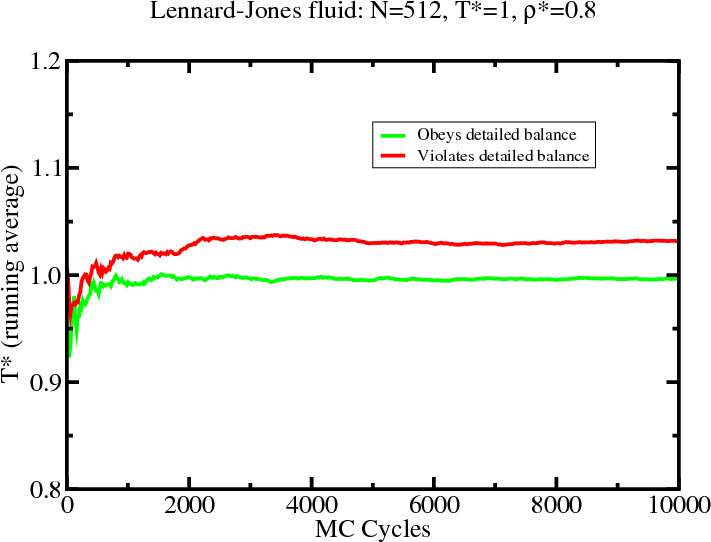
- BD Butler et al., J. Chem. Phys. 109, 6519 (1998).
- Orientations: AA Chialvo et al., J. Chem. Phys. 114, 6514 (2004).
Ergodicity
- “All areas of configuration space are accessible from any starting point.”
- Difficult to prove a priori that an MC algorithm is ergodic.
- Many interesting systems possess configuration spaces with “traps”.
- This can render many elementary MC algorithms practically non-ergodic (i.e. it is very difficult to access certain (potentially important) regions of configuration space).
- Common examples of apparent non-ergodicity arise from free-energy barriers (e.g., in first-order phase transitions).
Ergodicity
Isobaric-isothermal ensemble
- Constant number of particles, pressure, and temperature; fluctuating volume and energy.
- Joint distribution of volume and energy: \begin{equation*} {\mathcal P}(V,\,E;\,p,\,\beta) \propto \Omega(N,\,V,\,E) e^{\beta\,p\,V - \beta\,E} \end{equation*}
- Partition function: \begin{align*} \Delta(N,\,p,\,\beta) = \int {\rm d}V \int {\rm d}E \Omega(N,\,V,\,E) e^{\beta\,p\,V - \beta\,E} \end{align*}
- Gibb's free energy \begin{equation*} G(N,\,p,\,\beta) = - k_B\,T \ln \Delta(N,\,p,\,\beta) \end{equation*}
MC simulations in the isobaric-isothermal ensemble
- Single-particle move (results in $U\to U+\Delta U$) \begin{align*} A(o\to n) = \min(1,e^{-\beta\Delta U}) \end{align*}
- Volume move $V\to V+\Delta V$ ($-\Delta V_{\rm max}\le\Delta V \le\Delta V_{\rm max}$ results in $U\to U+\Delta U$) \begin{align*} A(o\to n) &= \min\left(1,\,p(V+\Delta V)/p(V)\right) \\ \frac{p(V+\Delta V)}{p(V)} &= \frac{(V+\Delta V)^N}{V^N} e^{-\beta(\Delta U + p\Delta V)} \end{align*}
- One MC sweep consists of $N_{\rm sp}$ attempted single-particle moves, and $N_{\rm vol}$ attempted volume moves.
- Single-particle moves and volume moves must be attempted at random with a fixed probability (and not cycled) so that $A(o\to n) = A(n\to o)$
Isobaric-isothermal ensemble
Particle positions are scaled during volume move, thus one configuration state maps to more($\Delta V>0$) OR less($\Delta V<0$) states. Detailed balance then requires the $(V+\Delta V)^N/V^N$ term to offset this.
Grand canonical ensemble
- Constant chemical potential, volume, and temperature; fluctuating particle number and energy.
- Joint distribution of particle number and energy: \begin{equation*} {\mathcal P}(N,E;\mu,\beta) \propto \Omega(N,V,E) e^{\beta \mu N - \beta E} \end{equation*}
- Partition function: \begin{align*} Z_{G}(\mu,V,\beta) = \sum_N \int dE \Omega(N,V,E) e^{\beta \mu N - \beta E} \end{align*}
- Free energy: pressure \begin{equation*} pV = k_BT \ln Z_G(\mu,V,\beta) + \mbox{constant} \end{equation*}
- Single particle move (results in $U\to U+\Delta U$) as before.
- Particle insertion: $N\to N+1$ (results in $U\to U+\Delta U$) \begin{align*} A(n\leftarrow o) &= \min\left(1,\frac{{\mathcal P}(N+1)}{{\mathcal P}(N)}\right) \\ \frac{{\mathcal P}(N+1)}{{\mathcal P}(N)} &= \frac{(zV)^{N+1}e^{-\beta(U+\Delta U)}}{(N+1)!} \frac{N!}{(zV)^{N}e^{-\beta U}} = \frac{zV e^{-\beta \Delta U}}{N+1} \end{align*} where $z=e^{\beta\,\mu-\ln\Lambda^3}$ ($\Lambda^3$ arises from the new particle's velocity integral in its unadded state (see Frenkel and Smit), $N+1$ is to maintain detailed balance on selecting the added particle for deletion).
- Particle deletion: $N\to N-1$ (results in $U\to U+\Delta U$) \begin{align*} A(n\leftarrow o) &= \min\left(1,\frac{{\mathcal P}(N-1)}{{\mathcal P}(N)}\right) \\ \frac{{\mathcal P}(N-1)}{{\mathcal P}(N)} &= \frac{(zV)^{N-1}e^{-\beta(U+\Delta U)}}{(N-1)!} \frac{N!}{(zV)^{N}e^{-\beta U}} = \frac{N e^{-\beta \Delta U}}{zV} \end{align*}
Ensemble averages
- Finally(!) assuming that you are sampling the equilibrium distribution, ensemble averages are calculated as simple unweighted averages over configurations \begin{equation*} \langle {\mathcal A} \rangle = \frac{1}{\mathcal N} \sum_{k} {\mathcal A}({\boldsymbol\Gamma}_k) \end{equation*}
- Statistical errors can be estimated assuming that block averages are statistically uncorrelated
Properties
- pressure $\displaystyle p=\left\lt \rho k_BT - \frac{1}{3V}\sum_{j\lt k}{\bf r}_{jk}\cdot \frac{\partial u_{jk}}{\partial {\bf r}_{jk}}\right\gt $
- density $\displaystyle \rho=\left\lt \frac{N}{V}\right\gt $
- chemical potential $\displaystyle \beta\mu-\ln\Lambda^3 =-\ln\left\lt \frac{V\exp(-\beta\Delta U_+)}{N+1}\right\gt $
- heat capacity
$\displaystyle
C_V/k_B = \frac{3}{2} N + \beta^2(\langle U^2\rangle-\langle U\rangle^2) $
$\displaystyle C_p/k_B = \frac{3}{2} N + \beta^2(\langle H^2\rangle-\langle H\rangle^2) $ - isothermal compressibility $\displaystyle \kappa_T = -\frac{1}{V}\left(\frac{\partial V}{\partial p}\right)_T = \frac{\langle V^2\rangle-\langle V\rangle^2} {k_BT\langle V\rangle} = \frac{V(\langle N^2\rangle-\langle N\rangle^2} {k_BT\langle N\rangle^2} $
Truncated-shifted Lennard-Jones atoms
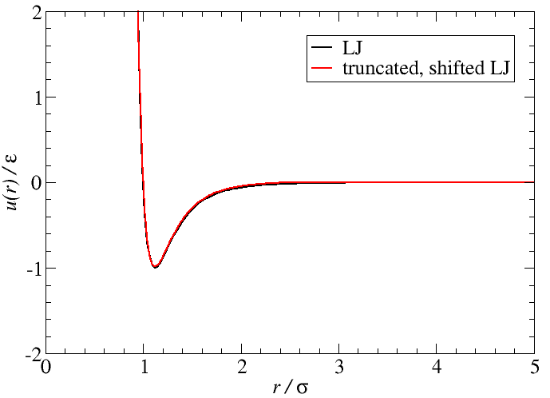\begin{align*} u_{\rm LJ}(r) &= 4\varepsilon\left[\left(\frac{\sigma}{r}\right)^{12} - \left(\frac{\sigma}{r}\right)^{6}\right] & u(r) &= \left\{ \begin{array}{ll} u_{\rm LJ}(r) - u_{\rm LJ}(r_c) & \mbox{for $r\lt r_c$} \\ 0 & \mbox{for $r\gt r_c$} \\ \end{array} \right. \end{align*} where $r_c=2.5$ for all that follows.
Results: Lennard-Jones fluid
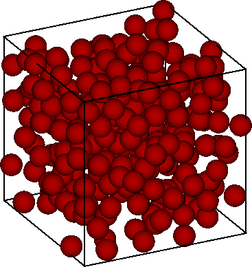 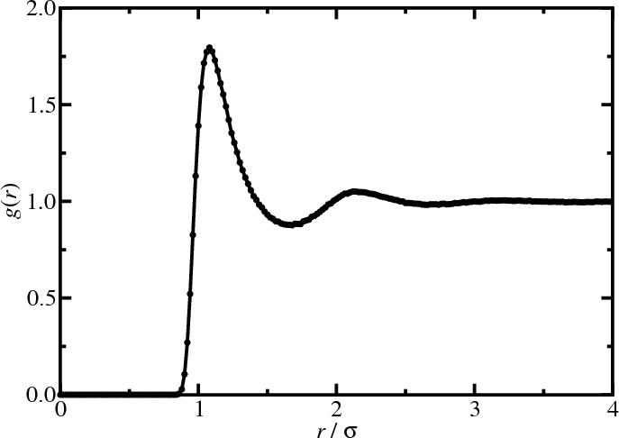Results: Lennard-Jones fluid
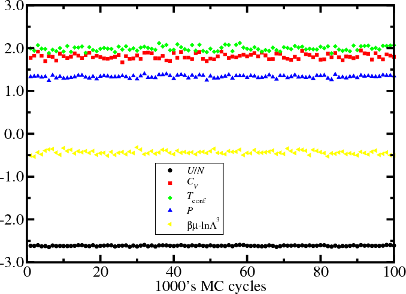 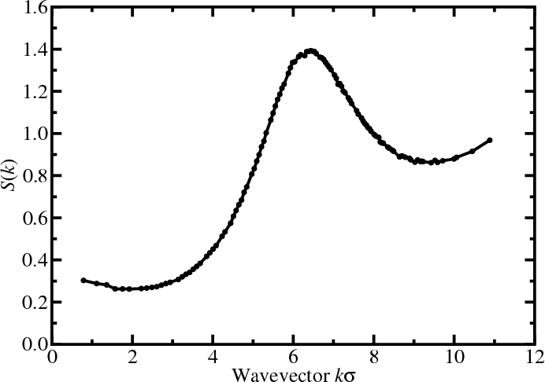Observing properties over the duration of the simulation can give confidence we have reached equilibrium (or become stuck...).
Results: Lennard-Jones fluid
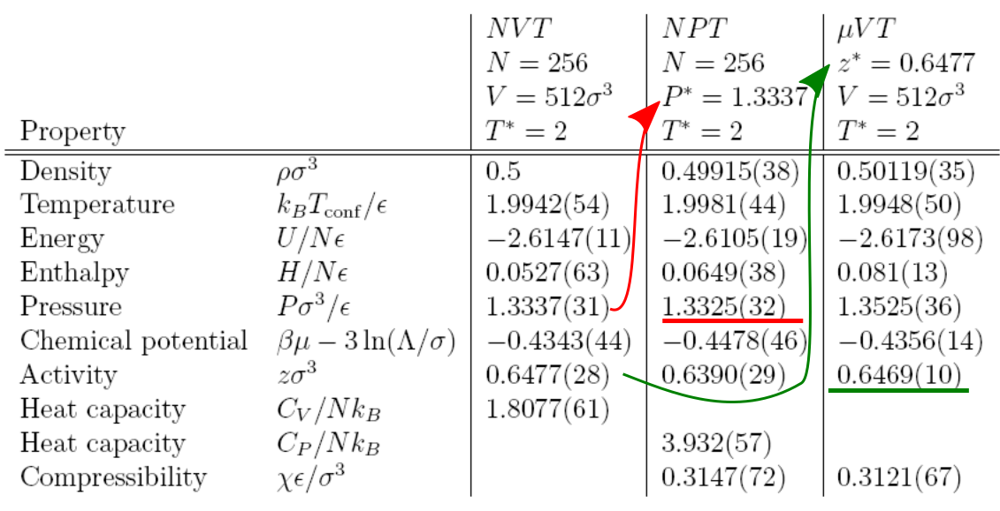Regardless of the ensemble (how we specify the thermodynamic state), at the same state the average properties are nearly identical. There are many fluctuations, even in the specified variables, do we have information on nearby states? (tune in to MC3 for more)
Ensembles
- canonical ensemble (NVT)
- Single-phase properties (at fixed densities)
- Phase transition with change in volume (e.g., freezing)
- Phase transition with change in structure (e.g., solid-solid)
- isobaric-isothermal ensemble (NpT)
- Corresponds to normal experimental conditions
- Easy to measure equation of state
- Density histograms ${\mathcal P}(V)$ at phase coexistence
- Expensive volume moves (recalculation of total energy)
- grand canonical ensemble ($\mu$VT)
- Open systems (mixtures, confined fluids, interfaces)
- Vapor-liquid coexistence and critical phenomena
- Dense systems (low insertion/deletion rate)
Finite size effects
- The finite size of the system (box dimension $L$, number of particles $N$) is a limitation for all computer simulations, irrespective of periodic boundary conditions.
- Finite-size effects become apparent when the interaction range or the correlation length $\xi$ becomes comparable to $L$ \begin{equation*} h(r) = g(r)-1 \sim \frac{e^{-r/\xi(T)}}{r} \end{equation*}
- Systems with long-range interactions (e.g., Coulomb)
- Vapour-liquid critical point: $\xi(T)$ diverges like $|T-Tc|^{-0.63}$.
Thanks
Thanks to Dr. Leo Lue (Strathclyde) for his excellent notes which this course is largely based on, also thanks to his predecessor, Dr Philip Camp (Edinburgh), where some slides originated from.
Thank you to you for your attention.
Monte Carlo 3: Biased sampling
Some samples use a biased statistical design... The U.S. National Center for Health Statistics... deliberately oversamples from minority populations in many of its nationwide surveys in order to gain sufficient precision for estimates within these groups. These surveys require the use of sample weights to produce proper estimates across all ethnic groups. Provided that certain conditions are met... these samples permit accurate estimation of population parameters.Taken from the sampling bias wikipedia page
God may like playing with dice but, given the success of hard-spheres and Lennard-Jones models, He also has a penchant for playing snooker using classical mechanics rules.
Prof. N. Allan, CCP5 summer school 2016
Introduction
- Histogram methods
- Quasi non-ergodicity
- Vapor-liquid transition
- Gibbs ensemble MC simulations
- Free-energy barrier in the grand-canonical ensemble
- Multicanonical simulations
- Replica exchange
Histogram extrapolation
- Consider an $NVT$ simulation at $\beta_0$, where we collect an energy histogram, ${\mathcal H}(E;\beta_0)$: \begin{align*} {\mathcal P}(E;\beta_0) &= \frac{\Omega(N,V,E)}{Q(N,V,\beta_0)} e^{-\beta_0 E} & {\mathcal H}(E;\beta_0) &\propto \Omega(N,V,E) e^{-\beta_0 E} \end{align*}
- Estimate for the density of states: \begin{align*} \Omega(N,V,E) \propto {\mathcal H}(E;\beta_0) e^{\beta_0 E} \end{align*}
- Using the estimate for $\Omega(N,V,E)$, we can estimate the histogram at any other $\beta$ \begin{align*} {\mathcal P}(E;\beta) &= \frac{\Omega(N,V,E)}{Q(N,V,\beta)} e^{-\beta E} \\ {\mathcal H}(E;\beta) &\propto \Omega(N,V,E) e^{-\beta E} \\ &\propto {\mathcal H}(E;\beta_0) e^{-(\beta-\beta_0) E} \end{align*}
Example: LJ fluid $\rho\sigma^3=0.5$. Solid lines are simulations, dashed lines are extrapolated histograms from $k_B\,T=2\varepsilon$.
Example: LJ fluid $\rho\sigma^3=0.5$. The extrapolated histograms allow evaluation of properties at any/all temperatures (within sampled states, above is at $k_B\,T=2\varepsilon$).
Histogram extrapolation: Other properties
- Other properties (i.e., $X$) can be extrapolated by collecting the joint probability distribution at $\beta_0$ \begin{align*} {\mathcal P}(X,E;\beta_0) &= \frac{\Omega(N,V,E,X)}{Q(N,V,\beta_0)} e^{-\beta_0 E} \\ {\mathcal H}(X,E;\beta_0) &\propto \Omega(N,V,E,X) e^{-\beta_0 E} \end{align*}
- Estimate for the modified density of states: \begin{align*} \Omega(N,V,E,X) \propto {\mathcal H}(X,E;\beta_0) e^{\beta_0 E} \end{align*}
- Using the estimate for $\Omega(N,V,E)$, we can estimate the histogram of property $X$ at any other $\beta$ \begin{align*} {\mathcal H}(X,E;\beta) &\propto \Omega(N,V,E,X) e^{-\beta E} \\ &\propto {\mathcal H}(X,E;\beta_0) e^{-(\beta-\beta_0) E} \end{align*}
Example: LJ fluid
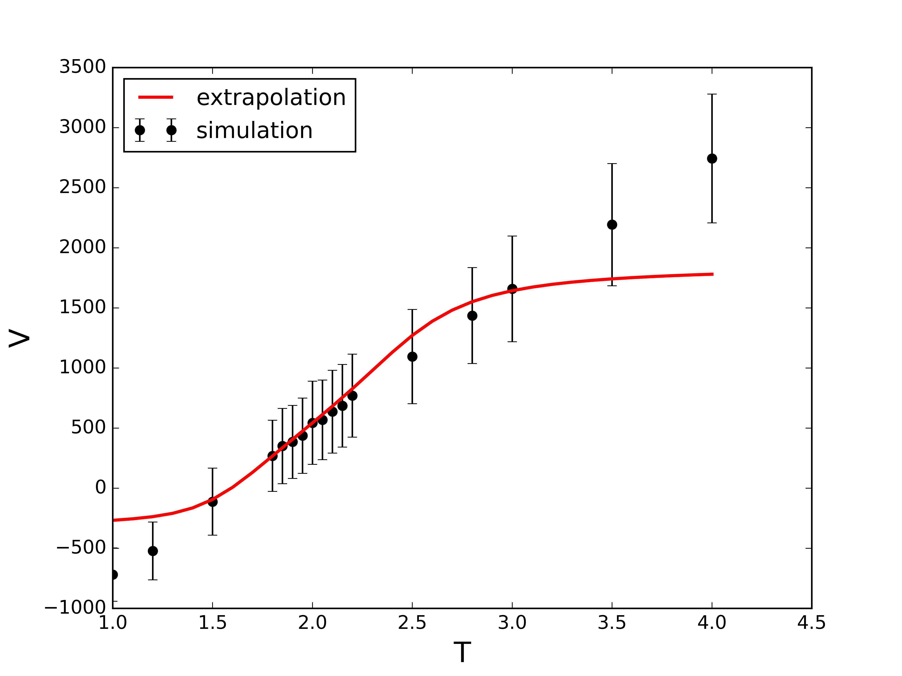Extrapolation of the virial (i.e., excess) contribution to the pressure.
- Consider the case where we perform NVT simulations at several temperatures $\beta_1$, $\beta_2$,..., $\beta_n$ where we collect the histograms: \begin{align*} {\mathcal H}(X,E;\beta_k) &\propto \Omega(N,V,E,X) e^{-\beta_k E} \end{align*}
- Estimate for the density of states as a weighted sum: \begin{align*} \Omega(N,V,E,X) \propto \sum_k \frac{w_k}{Z_k} {\mathcal H}(X,E;\beta_k) e^{\beta_k E} \end{align*} where $\sum_k w_k=1$ and $Z_k=\sum_{E,X} \Omega(N,V,E,X) e^{-\beta_k E}$.
- The uncertainty in ${\mathcal H}(X,E;\beta_k)$ is roughly $[{\mathcal H}(X,E;\beta_k)]^{1/2}$ (MC/Poisson).
- Determining the weights $w_k$ by minimizing the uncertainty of the estimate of the density of states leads to the following: \begin{align*} \Omega(N,V,E,X)&=\frac{\sum_j {\mathcal H}(E,X,\beta_j)}{\sum_k N_k\,Z_k^{-1}\,e^{-\beta_k\,E}} \end{align*} where $N_k$ is the number of samples, now solve for $Z^{-1}_k$!
Quasi non-ergodicity
- An MC algorithm may be theoretically ergodic, but in some cases it can be very difficult (or impossible) to sample all of the important regions of configuration space.
- 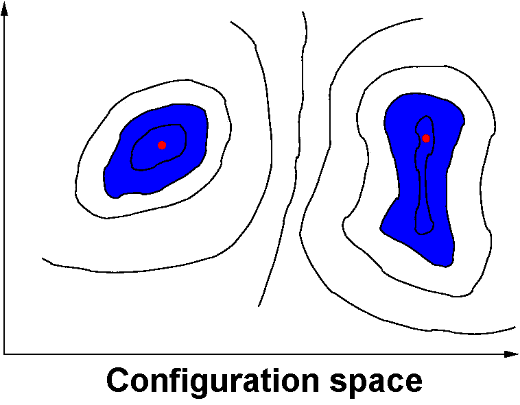 Even in “simple” systems (e.g., mono-atomic fluids) significant free-energy barriers can separate these important areas.
- A common example is the barrier between simulated coexisting phases at a first-order phase transition.
- We concentrate on the vapour-liquid phase transition.
Vapor-liquid transition
- At coexistence $T_{\rm vap}=T_{\rm liq}$, $p_{\rm vap}=p_{\rm liq}$, and $\mu_{\rm vap}=\mu_{\rm liq}$
- The density is the order parameter
Vapor-liquid transition: Difficulties
- In a finite-size system, the interfacial free energy (positive, unfavourable) is significant
- Free energy: $F=F_{\rm int}+F_{\rm bulk}=\gamma L^2 - AL^3$ 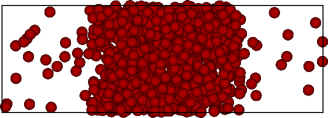
- Direct simulation will not locate the coexistence densities accurately
Gibbs ensemble Monte Carlo
- Two simulation boxes, $I$ and $II$
- Total number of particles $N$, volume $V$, temperature $T$
- Separate single-particle moves (thermal equilibrium)
- Exchange volume such that $V = V_I + V_{II}$ (equates $p$)
- Exchange particles such that $N = N_I + N_{II}$ (equates $\mu$)
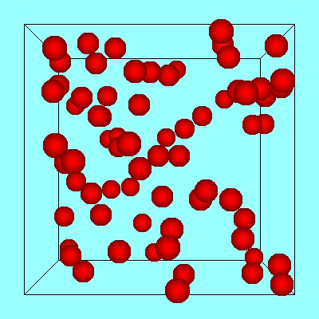 $\longleftrightarrow$ 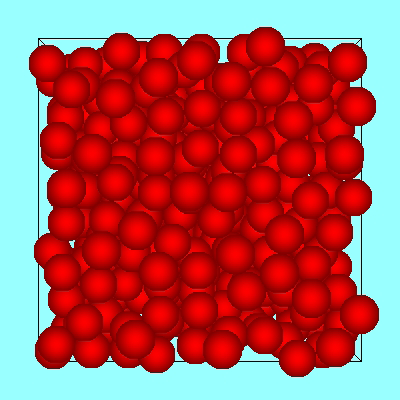
- Phase coexistence in a single simulation!
- Not good for dense phases: low probability for simultaneous particle insertion (in one box) and deletion (from the other)
- AZ Panagiotopoulos, Mol. Phys. 61, 813 (1987).
- D Frenkel and B Smit, Understanding Molecular Simulation (2001).
Gibbs ensemble Monte Carlo
Phase diagram of square-well fluids
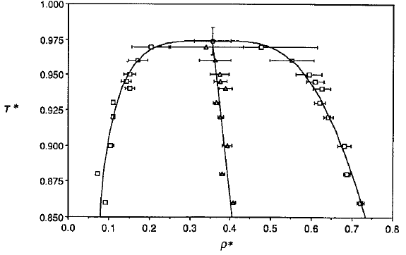
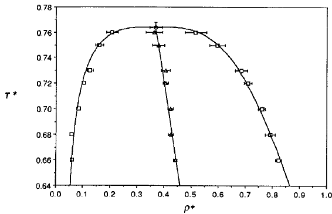
L Vega et al., J. Chem. Phys. 96, 2296 (1992).
Phase diagram of square-well fluids
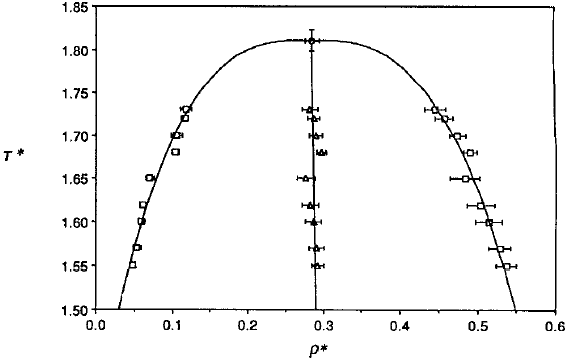
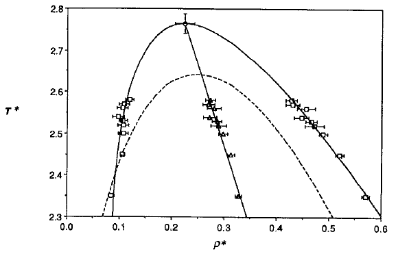
L Vega et al., J. Chem. Phys. 96, 2296 (1992).
MC simulations in the GC ensemble
- Single particle move (results in $U\to U+\Delta U$) \begin{align*} A(n\leftarrow o) = \min(1,e^{-\beta\Delta U}) \end{align*}
- Particle insertion: $N\to N+1$ (results in $U\to U+\Delta U$) \begin{align*} A(n\leftarrow o) &= \min\left(1,\frac{{\mathcal P}(N+1)}{{\mathcal P}(N)}\right) \\ \frac{{\mathcal P}(N+1)}{{\mathcal P}(N)} &= \frac{(zV)^{N+1}e^{-\beta(U+\Delta U)}}{(N+1)!} \frac{N!}{(zV)^{N}e^{-\beta U}} = \frac{zV e^{-\beta \Delta U}}{N+1} \end{align*}
- Particle deletion: $N\to N-1$ (results in $U\to U+\Delta U$) \begin{align*} A(n\leftarrow o) &= \min\left(1,\frac{{\mathcal P}(N-1)}{{\mathcal P}(N)}\right) \\ \frac{{\mathcal P}(N-1)}{{\mathcal P}(N)} &= \frac{(zV)^{N-1}e^{-\beta(U+\Delta U)}}{(N-1)!} \frac{N!}{(zV)^{N}e^{-\beta U}} = \frac{N e^{-\beta \Delta U}}{zV} \end{align*}
Free energy barrier in GC ensemble
- In the grand-canonical ensemble \begin{equation*} {\mathcal P}(N) = \frac{Q(N,V,T)}{Z_G(\mu,V,T)}e^{\beta\mu N } = \frac{Q(N,V,T)}{Z_G(\mu,V,T)} z^N \end{equation*}
- In a system at coexistence well below $T_c$, the particle number histogram $p(N)$ [or $p(\rho=N/V)$] at constant chemical potential, temperature, and volume is bimodal, with almost no “overlap” between the peaks
 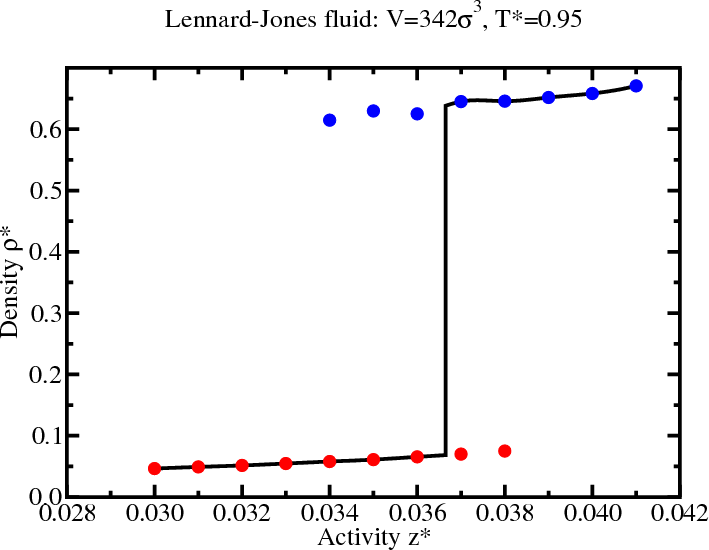
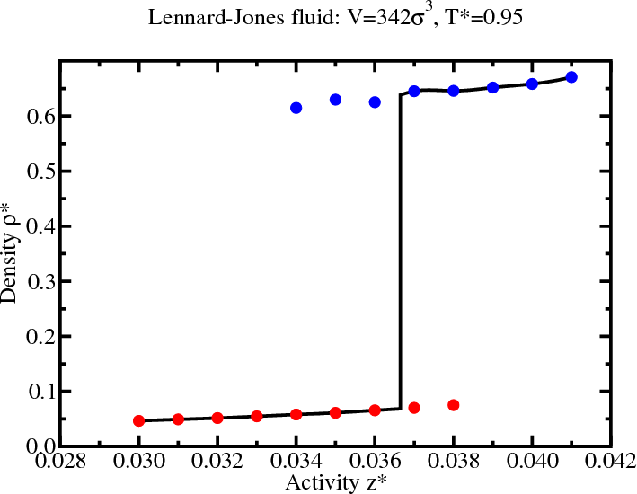
Multicanonical simulations
- Apply a biasing potential $\eta(N)$ in the Hamiltonian to cancel out the barrier. \begin{equation*} {\mathcal P}_{\rm bias}(N) \propto {\mathcal P}(N) e^{-\eta(N)} \end{equation*}
- Insertion/deletion acceptance probabilities are modifed \begin{equation*} \frac{{\mathcal P}_{\rm bias}(N_n)}{{\mathcal P}_{\rm bias}(N_o)} = \frac{{\mathcal P}(N_n)}{{\mathcal P}(N_o)} e^{-[\eta(N_n)-\eta(N_o)]} \end{equation*}
- Single-particle moves are unaffected
Multicanonical weights
\begin{equation*} {\mathcal P}_{\rm bias}(N) \propto {\mathcal P}(N) e^{-\eta(N)} \end{equation*}- The “ideal” choice for $\eta(N)$ would cancel out the barrier completely such that the biased probability distribution is flat, i.e., $\eta(N) = k_BT\ln{\mathcal P}(N)$ so that ${\mathcal P}_{\rm bias}(N) = {\rm constant}$
- However, if we knew that in advance, there would be no need for a simulation!
- Fortunately, $\eta(N)$ can be determined iteratively, to give successively smooth biased distributions
Determining the multicanonical weights
\begin{equation*} {\mathcal P}_{\rm bias}(N) \propto {\mathcal P}(N) e^{-\eta(N)} \end{equation*}- [Step 1:] Choose $z$ to be near coexistence (selected from hysteresis region)
- [Step 2:] Get good statistics in ${\mathcal P}(N)$ for $N_{\rm min}\le N\le N_{\rm max}$
- [Step 3:] Generate biasing potential \begin{align*} \eta(N) &= k_BT\ln{\mathcal P}(N) \\ \eta(N\lt N_{\rm min}) &= k_BT\ln{\mathcal P}(N_{\rm min}) \\ \eta(N\gt N_{\rm max}) &= k_BT\ln{\mathcal P}(N_{\rm max}) \end{align*}
- [Step 4:] Get good statistics in ${\mathcal P}_{\rm bias}(N)$ (now over a wider range of $N$)
- [Step 5:] Generate unbiased $p(N)$ \begin{align*} {\mathcal P} \propto {\mathcal P}_{\rm bias}(N) e^{\eta(N)} \end{align*} return to Step 3
Multicanonical simulations: LJ fluid
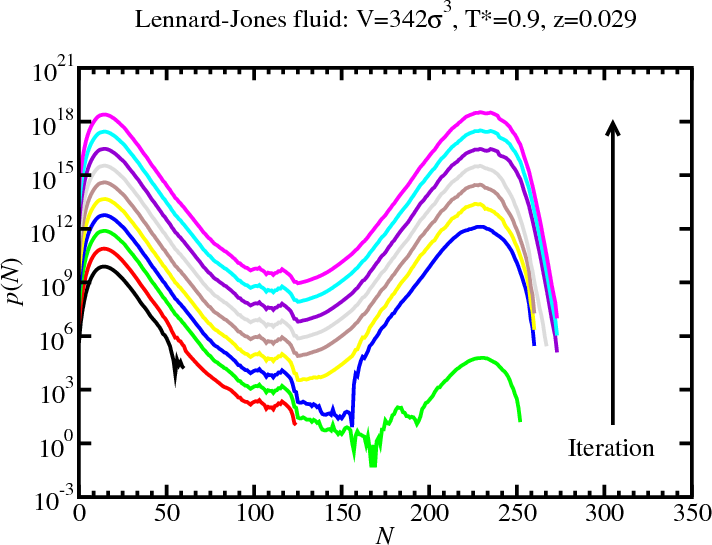GCMC: Histogram reweighting
- At reciprocal temperature $\beta_0$ and activity $z_0$ \begin{align*} {\mathcal P}(N,E;\mu_0,V,\beta_0) = \frac{\Omega(N,V,E)}{Z_G(\mu_0,V,\beta_0)} e^{\beta_0\mu_0 N - \beta_0 U} \end{align*}
- Now consider a different activity and temperature \begin{align*} {\mathcal P}(N,E;\mu_1,V,\beta_1) &= \frac{\Omega(N,V,E)}{Z_G(\mu_1,V,\beta_1)} e^{\beta_1\mu_1 N-\beta_1 U} \\ &= {\mathcal P}(N,E;\mu_0,V,\beta_0) \left(\frac{z_1}{z_0}\right)^N e^{-(\beta_1-\beta_0)U} \\ & \qquad \times \frac{Z_{G}(\mu_1,V,\beta_1)}{Z_{G}(\mu_0,V,\beta_0)} \end{align*}
- The ratio $Z_{G}(\mu_1,V,\beta_1)/Z_{G}(\mu_0,V,\beta_0)$ is just a normalizing factor, \begin{align*} \sum_{N} \int dE {\mathcal P}(N,E;\mu,V,\beta) = \sum_{N} {\mathcal P}(N;\mu,V,\beta) = \int dE {\mathcal P}(E;\mu,V,\beta) = 1 \end{align*}
Determining coexistence
- To find coexistence, tune $\mu$ to satisfy the “equal area”
rule (not equal peak height)
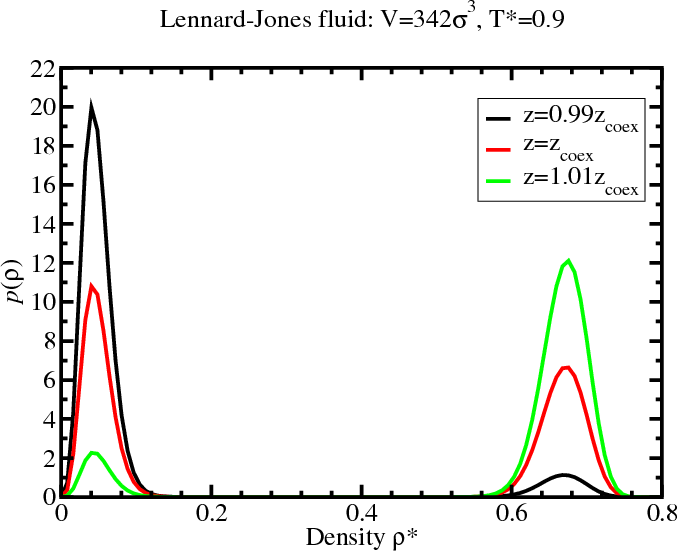 - These histograms were generated from a multicanonical simulation with $z=0.029$.
Density histogram for the LJ fluid
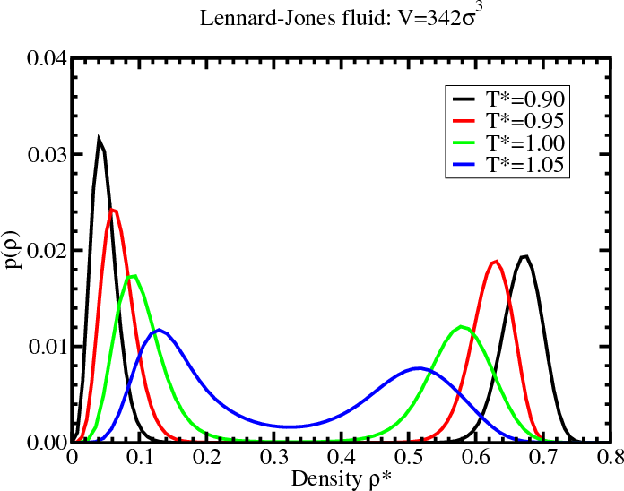Lennard-Jones phase diagram
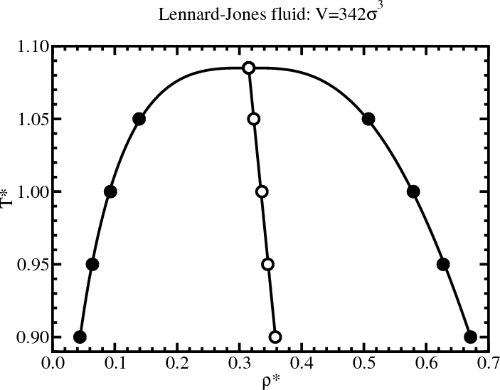 \begin{align*} \rho_{l/g} &= \rho_c + A|T-T_c| \pm B|T-T_c|^\beta \\ \beta &= 0.3265 \qquad \mbox{(universal)} \end{align*}Replica exchange
- “Rough” energy landscapes are hard to sample at low temperature (get stuck in local minima)
- High-temperature simulations can glide over barriers 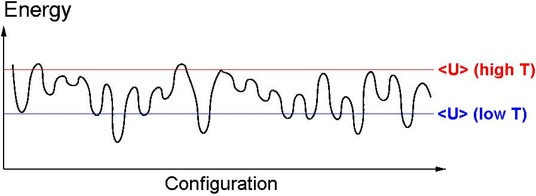
- Exchange complete configurations (with energies $U_0$ and $U_1$) between simulations run in parallel at different reciprocal temperatures ($\beta_0$ and $\beta_1$, respectively) \begin{equation*} \frac{{\mathcal P}(n)}{{\mathcal P}(o)} = \frac{e^{-\beta_0U_1} \times e^{-\beta_1U_0}}{e^{-\beta_0U_0} \times e^{-\beta_1U_1}} = e^{-(\beta_0-\beta_1 )(U_1-U_0 )} \end{equation*}
Replica exchange: Simple example
-
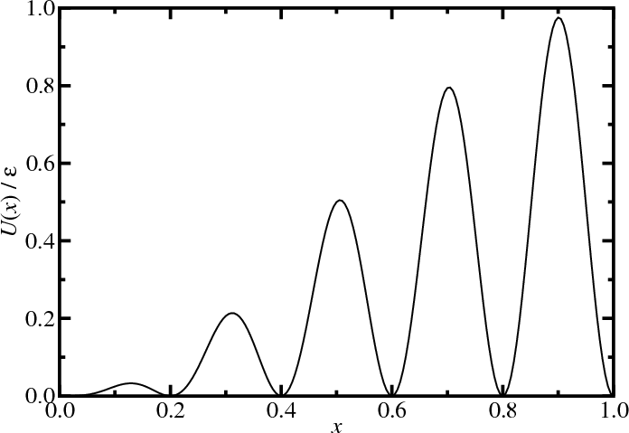Model one-dimensional system
\begin{align*} U(x) &= \left[\sin\frac{\pi x}{2} \sin 5\pi x\right]^2 \\ p(x,\beta) &\propto e^{-\beta U} \end{align*}
(after Frenkel and Smit) - Single particle in unit box (with periodic boundary conditions)
- External potential, $U(x)$.
- Start, $x = 0$.
- $\Delta x = \pm0.005$
- $10^6$ MC moves
Replica exchange: Simple example
- Without parallel tempering
- Simulations (point); exact (lines)
Replica exchange: Simple example
- With parallel tempering
- Five reciprocal temperatures ($\beta^*=0$, $4$, $8$ , $12$, and $16$)
Statistical Mechanics Recap
Microscopics notation recap
- $N$ spherical atoms of mass $m$
- position of atom $\alpha$ is ${\bf r}_\alpha$
- momentum of atom $\alpha$ is ${\bf p}_\alpha$
- point in phase space: ${\boldsymbol\Gamma}=({\bf r}_1,\dots{\bf r}_N,{\bf p}_1,\dots,{\bf p}_N)$
- pairwise additive potential $u(|{\bf r}_\alpha-{\bf r}_{\alpha'}|)$
- Hamiltonian: $H({\boldsymbol\Gamma})=U({\bf r}_1,\dots{\bf r}_N)+K({\bf p}_1,\dots,{\bf p}_N)$ \begin{align*} U({\bf r}_1,\dots{\bf r}_N) &= \frac{1}{2} \sum_{\alpha\ne\alpha'} u(|{\bf r}_\alpha-{\bf r}_{\alpha'}|) \\ K({\bf p}_1,\dots,{\bf p}_N) &= \sum_\alpha \frac{p_\alpha^2}{2m} \end{align*}
Phase space
Thermodynamics Recap
1st law: Energy is conserved \begin{align*} dU &= \delta Q - \delta W \end{align*} 2nd law: Entropy change is non-negative: $dS\ge\frac{\delta Q}{T}$Combining and including pressure-volume & particle work: \begin{align*} {\rm d}U &\le T\,{\rm d}S - p{\rm d}V + \mu\,{\rm d}N \\ {\rm d}S &\ge \frac{1}{T}dU + \frac{p}{T}dV - \frac{\mu}{T}{\rm d}N \end{align*} Reversible transformations: \begin{align*} {\rm d}U &= T\,{\rm d}S - p\,{\rm d}V + \mu\,{\rm d}N \end{align*} State functions are exact differentials: \begin{align*} {\rm d}f &= \frac{\partial f}{\partial x}{\rm d}x + \frac{\partial f}{\partial y}{\rm d}y + \frac{\partial f}{\partial z}{\rm d}z \end{align*} thus: $U(S,V,N)$, $S(U,V,N)$
Basic concepts
Ergodic hypothesis: A system with fixed $N$, $V$, and $E$ ($U$) is equally likely to be found in any of its $\Omega(N,V,E)$ microscopic states.
Consider two subsets of states, $\Omega_A$ and $\Omega_B$. A system is more likely to be found in set A if $\Omega_A>\Omega_B$.
Therefore $S(\Omega_A)>S(\Omega_B)$ as A is more likely, thus $S$ must be a monotonically increasing function in $\Omega$.
As states increase multiplicatively, yet entropy is additive, the relationship must be logarithmic. \begin{equation*} S(N,V,E) = k_B \ln \Omega(N,V,E) \end{equation*} where $k_B=1.3806503\times10^{-23}$ J K$^{-1}$ is the Boltzmann constant, present for historic reasons.
Density of states
- The density of states $\Omega(N,V,E)$ is the number of ways the system can have an energy $E$. In other words, it is the "volume" of phase space with an energy $E$.
- Volume element in phase space: \begin{equation*} d{\boldsymbol\Gamma} = \frac{1}{N!} \frac{d{\bf r}_1d{\bf p}_1}{h^3}\cdots \frac{d{\bf r}_N d{\bf p}_N}{h^3} \end{equation*} where $h$ is Planck's constant.
- Mathematically, the density of states is given by \begin{equation*} \Omega(N,V,E) = \int_{E \lt H({\boldsymbol\Gamma})\lt E+\delta E} d{\boldsymbol\Gamma} \end{equation*} where $\delta E\ll E$.
Microcanonical ensemble ($N V E$)
Fundamental equation of thermodynamics: \begin{align*} {\rm d}S(N,V,E) &= \frac{{\rm d}E}{T} + \frac{p}{T}{\rm d}V - \frac{\mu}{T}{\rm d}N \end{align*} From $S(N,V,E) = k_B \ln \Omega(N,V,E)$: \begin{align*} {\rm d}\ln\Omega(N,V,E) &= \beta\,{\rm d}E + \beta\,p\,{\rm d} V - \beta\,\mu\,{\rm d}N \end{align*} where $\beta=1/(k_B\,T)$.Once the density of states $\Omega(N,V,E)$ is known, all the thermodynamic properties of the system can be determined.
Free energies (other ensembles)
The microcanonical ensemble ($N$, $V$, $E$) is very useful for molecular dynamics; however, other ensembles such as ($N$, $V$, $T$) are more accessible in experiments.Helmholtz free energy: $A=U-TS$ \begin{align*} {\rm d}A &\le -S\,{\rm d}T - p\,{\rm d}V + \mu\,{\rm d}N \end{align*} Reversible transformations: \begin{align*} {\rm d}A &= -S\,{\rm d}T - p\,{\rm d}V + \mu\,{\rm d}N \end{align*} State functions are exact differentials, thus: \begin{equation*} A(T,V,N) \end{equation*} Lets consider the probabilities of the ($N$, $V$, $T$) ensemble...
Canonical ensemble ($N V T$)
\begin{equation*} {\mathcal P}(E) \propto \Omega(E;E_{\rm tot}) \qquad \qquad \Omega(E;E_{\rm tot}) = \Omega(E) \Omega_{\rm surr.} (E_{\rm tot}-E) \end{equation*} (Note: the $N$ and $V$ variables for the system and the surroundings are implicit)
Canonical ensemble
\begin{align*} {\mathcal P}(E,E_{\rm tot}) &\propto \Omega(E) \Omega_{\rm surr.}(E_{\rm tot}-E) \\ &\propto \Omega(E) e^{\ln \Omega_{surr.}(E_{\rm tot}-E)} \end{align*}
Performing a taylor expansion of $\ln\Omega_{\rm surr.}$ around $E_{\rm tot}$. \begin{align*} {\mathcal P}(E,E_{\rm tot}) &\propto \Omega(E) e^{\ln \Omega_B(E_{\rm tot}) - E \frac{\partial}{\partial E_{\rm tot}}\ln \Omega_B(E_{\rm tot}) + \cdots} \end{align*}
First-order is fine as $E\ll E_{tot}$. Note that $\partial \ln \Omega(E) / \partial E=\beta$.
At equilibrium the surroundings and system have the same temperature thus:
\begin{align*}
{\mathcal P}(E,E_{\rm tot}) &\propto \Omega(E) e^{\ln \Omega_B(E_{\rm
tot}) - \beta E} \end{align*}
\begin{align*} {\mathcal P}(E) &\propto
\Omega(E) e^{- \beta E} \end{align*}
(If the surroundings are large, $E_{\rm tot}$ is unimportant and the constant term $\ln \Omega_B(E_{\rm tot})$ cancels on normalisation)
Canonical ensemble
Boltzmann distribution \begin{equation*} {\mathcal P}(E) = \frac{\Omega(N, V, E)}{Q(N,V,\beta)} e^{ - \beta\,E} \end{equation*} Canonical partition function is the normalisation: \begin{equation*} Q(N,V,\beta) = \int {\rm d}E\,\Omega(N,V,E) e^{-\beta\,E} \end{equation*} Its also related to the Helmholtz free energy \begin{align*} A &= -k_B\,T \ln Q(N,V,\beta) \\ {\rm d}A &= -S\,{\rm d}T -p\,{\rm d}V + \mu\,{rm d}N \\ {\rm d}\ln Q(N,\,V,\,\beta) &= - E\,{\rm d}\beta + \beta\,p\,{\rm d}V - \beta\,\mu\,{\rm d}N \end{align*} Again, all thermodynamic properties can be derived from $Q(N,\,V,\,\beta)$.Canonical ensemble: Partition function
The canonical partition function can be written in terms of an integral over phase space coordinates: \begin{align*} Q(N,V,\beta) &= \int dE \Omega(N,V,E) e^{-\beta E} \\ &= \int dE e^{-\beta E} \int_{E \lt H({\boldsymbol\Gamma})\lt E+\delta E} d{\boldsymbol\Gamma} \\ &= \int d{\boldsymbol\Gamma}\, e^{-\beta H({\Gamma})} \\ &= \frac{1}{N!}\int \frac{d{\bf r}_1d{\bf p}_1}{h^3} \cdots \frac{d{\bf r}_N d{\bf p}_N}{h^3} e^{-\beta H({\Gamma})} \end{align*}Factorization of the partition function
- The partition function can be factorized \begin{align*} Q(N,V,T) = \frac{1}{N!} \int d{\bf r}_1\cdots d{\bf r}_N e^{-\beta U({\bf r}_1,\dots{\bf r}_N)} \int \frac{d{\bf p}_1}{h^3}\cdots\frac{d{\bf p}_N}{h^3} e^{-\beta K({\bf p}_1,\dots,{\bf p}_N)} \end{align*}
- The integrals over the momenta can be performed exactly \begin{align*} \int\frac{{\rm d}{\bf p}_1}{h^3}\cdots\frac{{\rm d}{\bf p}_N}{h^3} e^{-\beta K({\bf p}_1,\dots,{\bf p}_N)} &= \left[\int\frac{{\rm d}{\bf p}}{h^3} e^{-\frac{\beta\,p^2}{2\,m}} \right]^{N} \\ &= \left(\frac{2\,\pi\,m}{\beta h^2}\right)^{3\,N/2} = \Lambda^{-3\,N} \end{align*}
- The partition function is given in terms of a configurational integral and the de Broglie wavelength $\Lambda$ \begin{equation*} Q(N,\,V,\,T) = \frac{1}{N!\Lambda^{3\,N}} \int {\rm d}{\bf r}_1\cdots {\rm d}{\bf r}_N e^{-\beta\,U({\bf r}_1,\dots{\bf r}_N)} = \frac{Z(N,\,V,\,T)}{N!\Lambda^{3\,N}} \end{equation*}
Average properties
- The probability of being at the phase point ${\boldsymbol\Gamma}$ is \begin{equation*} {\mathcal P}({\boldsymbol\Gamma}) = \frac{e^{-\beta\,H({\boldsymbol\Gamma})}}{Q(N,\,V,\,\beta)} \end{equation*}
- The average value of a property ${\mathcal A}({\boldsymbol\Gamma})$ is \begin{align*} \langle{\mathcal A}\rangle &= \int {\rm d}{\boldsymbol\Gamma} {\mathcal P}({\boldsymbol\Gamma}) {\mathcal A}({\boldsymbol\Gamma}) \\ &= \frac{1}{Q(N,\,V,\,\beta)}\int {\rm d}{\boldsymbol\Gamma} e^{-\beta H({\boldsymbol\Gamma})} {\mathcal A}({\boldsymbol\Gamma}) \end{align*}
- If the property depends only on the position of the particles \begin{align*} \langle{\mathcal A}\rangle &= \frac{1}{Q(N,V,\beta)} \int d{\bf r}_1\cdots d{\bf r}_N e^{-\beta U({\bf r}_1,\dots,{\bf r}_N)} {\mathcal A}({\bf r}_1,\dots,{\bf r}_N) \end{align*}
Grand canonical ensemble ($\mu V T$)
\begin{align*} {\mathcal P}(N,E) &\propto \Omega(N,E;N_{\rm tot},E_{\rm tot}) \\ \Omega(N,E;N_{\rm tot},E_{\rm tot}) &= \Omega(N,E) \Omega_B(N_{\rm tot}-N,E_{\rm tot}-E) \end{align*}Grand canonical ensemble
Boltzmann distribution \begin{equation*} {\mathcal P}(E,N) = \frac{\Omega(N, V, E)}{Z_G(\mu,V,\beta)} e^{\beta \mu N - \beta E} \end{equation*} Grand canonical partition function \begin{equation*} Z_G(\mu, V, \beta) = \sum_{N} \int {\rm d}E\,\Omega(N,V,E) e^{\beta\,\mu\,N - \beta\,E} \end{equation*} Grand potential \begin{align*} \Omega &= - pV = -k_BT \ln Z_G(\mu,V,\beta) \\ d\Omega &= - d(pV) = -S dT - pdV - N d\mu \\ d\ln Z_G(\mu, V, \beta) &= - E d\beta + \beta pdV + N d\beta\mu \end{align*}Isothermal-isobaric ensemble ($NpT$)
Boltzmann distribution \begin{equation*} {\mathcal P}(V,E) = \frac{\Omega(N, V, E)}{\Delta(N,p,\beta)} e^{\beta pV - \beta E} \end{equation*} Isothermal-isobaric partition function \begin{equation*} \Delta(N, p, \beta) = \int dV \int dE\, \Omega(N,V,E) e^{\beta pV - \beta E} \end{equation*} Gibbs free energy \begin{align*} G &= -k_BT \ln\Delta(N,p,\beta) \\ dG &= -S dT + Vdp + \mu dN \\ d\ln\Delta(N, p, \beta) &= - E d\beta + V d \beta p + \beta\mu dN \end{align*}$n$-particle density
- The $n$-particle density $\rho^{(n)}({\bf r}_1,\dots,{\bf r}_n)$ is defined as $N!/(N-n)!$ times the probability of finding $n$ particles in the element $d{\bf r}_1\cdots d{\bf r}_n$ of coordinate space. \begin{align*} &\rho^{(n)}({\bf r}_1,\dots,{\bf r}_n) = \frac{N!}{(N-n)!} \frac{1}{Z(N,V,T)} \int d{\bf r}_{n+1}\cdots d{\bf r}_N\, e^{-\beta U({\bf r}_1,\dots,{\bf r}_N)} \\ &\int d{\bf r}_1\cdots d{\bf r}_n\,\rho^{(n)}({\bf r}_1,\dots,{\bf r}_n) = \frac{N!}{(N-n)!} \end{align*}
- This normalisation means that, for a homogeneous system, $\rho^{(1)}({\bf r})=\rho=N/V$ \begin{align*} &\int d{\bf r}\, \rho^{(1)}({\bf r}) = N \qquad \longrightarrow \qquad \rho V = N \\ &\int d{\bf r}_1d{\bf r}_2\, \rho^{(2)}({\bf r}_1,{\bf r}_2) = N(N-1) \end{align*}
$n$-particle distribution function
- The $n$-particle distribution function $g^{(n)}({\bf r}_1,\dots,{\bf r}_n)$ is defined as \begin{align*} g^{(n)}({\bf r}_1,\dots,{\bf r}_n) &=\frac{\rho^{(n)}({\bf r}_1,\dots,{\bf r}_n)} {\prod_{k=1}^n \rho^{(1)}({\bf r}_i)} \\ g^{(n)}({\bf r}_1,\dots,{\bf r}_n) &= \rho^{-n} \rho^{(n)}({\bf r}_1,\dots,{\bf r}_n) \qquad \mbox{for a homogeneous system} \end{align*}
- For an ideal gas (i.e., $U=0$): \begin{align*} &\rho^{(n)}({\bf r}_1,\dots,{\bf r}_n) = \frac{N!}{(N-n)!} \frac{\int d{\bf r}_{n+1}\cdots d{\bf r}_N}{\int d{\bf r}_{1}\cdots d{\bf r}_N} = \frac{N!}{(N-n)!} \frac{V^{N-n}}{V^N} \approx \rho^n \\ &g^{(n)}({\bf r}_1,\dots,{\bf r}_n) \approx 1 \\ &g^{(2)}({\bf r}_1,{\bf r}_2) = 1 - \frac{1}{N} \end{align*}
Radial distribution function
- $n=2$: pair density and pair distribution function in a homogeneous fluid \begin{align*} g^{(2)}({\bf r}_1,{\bf r}_2) &= \rho^{-2} \rho^{(2)}({\bf r}_1,{\bf r}_2) \\ g^{(2)}({\bf 0},{\bf r}_2-{\bf r}_1) &= \rho^{-2} \rho^{(2)}({\bf 0},{\bf r}_2-{\bf r}_1) \end{align*}
- Average density of particles at r given that a tagged particle is at the origin is \begin{equation*} \rho^{-1} \rho^{(2)}({\bf 0},{\bf r}) = \rho g^{(2)}({\bf 0},{\bf r}) \end{equation*}
- The pair distribution function in a homogeneous and isotropic fluid is the radial distribution function $g(r)$, \begin{equation*} g(r) = g^{(2)}({\bf r}_1,{\bf r}_2) \end{equation*} where $r = |{\bf r}_1-{\bf r}_2|$
Radial distribution function


Radial distribution function
- Energy, virial, and compressibility equations: \begin{align*} U &= N \rho \int d{\bf r} u(r) g(r) \\ \frac{\beta p}{\rho} &= 1 - \frac{\beta\rho}{6} \int d{\bf r} w(r) g(r) \\ \rho k_BT \kappa_T &= 1 + \rho \int d{\bf r} [g(r)-1] \end{align*}
- "Pair" virial \begin{equation*} w(r) = {\bf r}\cdot \frac{\partial u}{\partial{\bf r}} \end{equation*}
Structure factor
- Fourier component $\hat{\rho}({\bf k})$ of the instantaneous single-particle density \begin{align*} \rho({\bf r}) &= \sum_\alpha \delta^d({\bf r}-{\bf r}_\alpha) = \int \frac{d{\bf k}}{(2\pi)^d} \hat{\rho}({\bf k}) e^{-i{\bf k}\cdot{\bf r}} \\ \hat{\rho}({\bf k}) &= \int d{\bf r} \rho({\bf r}) e^{i{\bf k}\cdot{\bf r}} \end{align*}
- Autocorrelation function is called the structure factor $S(k)$ \begin{align*} \frac{1}{N}\langle\hat{\rho}({\bf k})\hat{\rho}(-{\bf k})\rangle &= 1 + \frac{1}{N}\left\lt \sum_{\alpha\ne\alpha'} e^{-i{\bf k}\cdot({\bf r}_\alpha-{\bf r}_{\alpha'})} \right\gt \\ S({\bf k}) &= 1 + \rho\int d{\bf r}[g({\bf r})-1] e^{-i{\bf k}\cdot{\bf r}} \end{align*}
- $S({\bf k})$ reflects density fluctuations and dictates scattering
Fourier decomposition
Consider the function \begin{align*} f(x) &= x^2 + \frac{1}{2}\sin 6\pi x + 0.1 \cos 28\pi x \end{align*} Fourier representation: \begin{align*} f(x) &= \sum_{n=0} A_n e^{-i k_n x} \end{align*} where $k_n = 2\pi n$.Fourier decomposition

Structure factor
- A peak at wavevector $k$ signals density inhomogeneity on the
lengthscale $2\pi/k$


- $k=0$ limit is related to the isothermal compressibility $\kappa_T$ \begin{equation*} S(0) = 1 + \rho \int d{\bf r} [g({\bf r})-1] = \rho k_BT \kappa_T \end{equation*}
Further reading
- D Chandler, Introduction to Modern Statistical Mechanics (1987).
- DA McQuarrie, Statistical Mechanics (2000).
- LE Reichl, A Modern Course in Statistical Physics (2009).
- JP Hansen and IR McDonald, Theory of Simple Liquids, 3ed (2006).